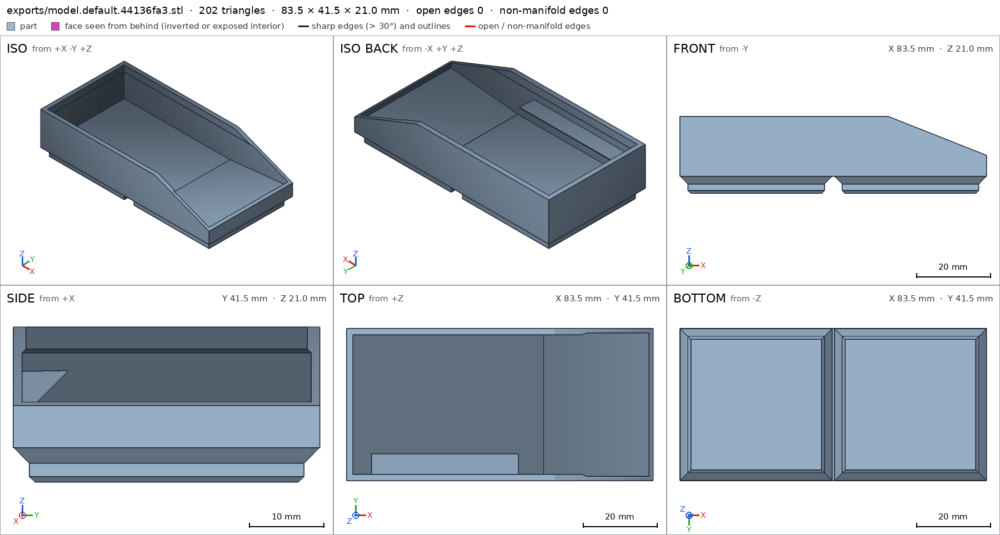
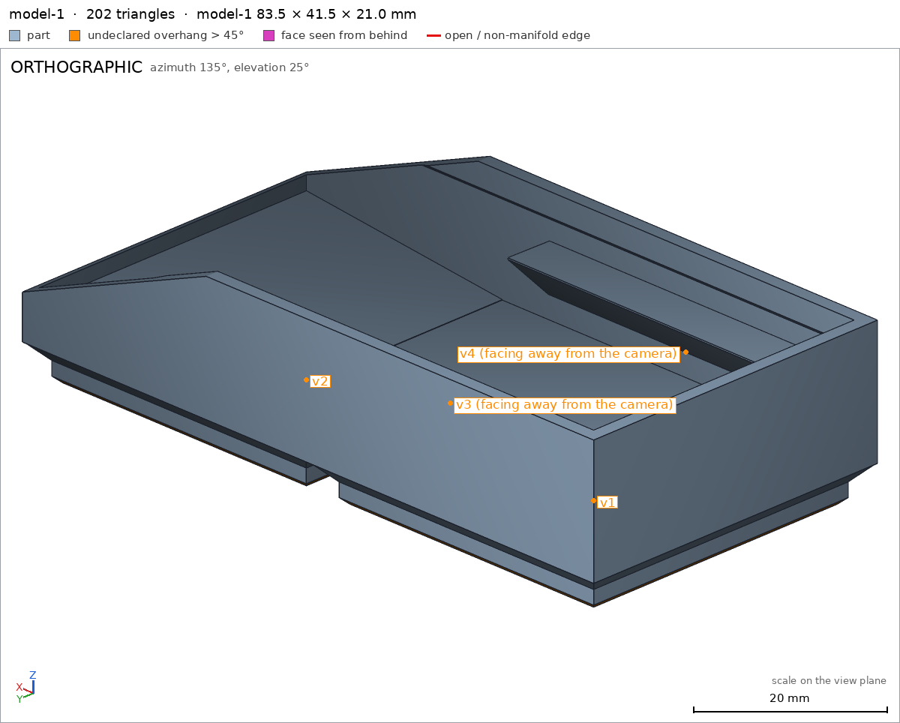
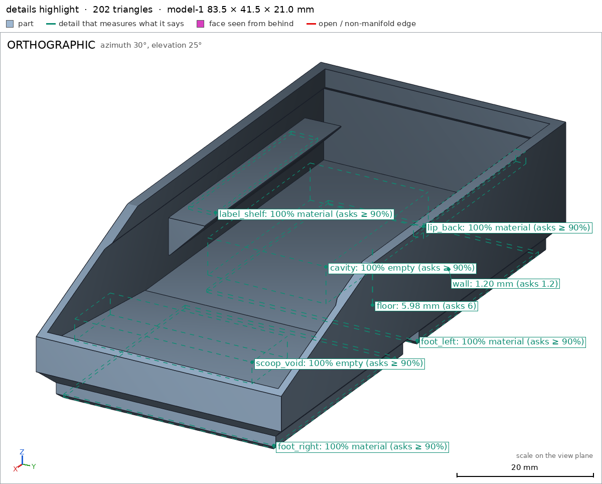

Gridfinity bin, 2 x 1
Request
A storage bin for my Gridfinity drawer system, 2 units by 1 unit and 3 units tall.
- The Gridfinity grid is 42 mm per unit, so the bin's outside is 83.5 x 41.5 mm (0.25 mm of clearance on each side); height units are 7 mm.
- The standard Gridfinity foot under each unit, so it drops into a standard baseplate: the stepped profile of 0.8 mm at 45 degrees, 1.8 mm vertical and 2.15 mm at 45 degrees.
- The standard stacking lip on top, so another bin stacks on it.
- A label shelf along one long side, and a scoop at the front so small parts slide out.
- PLA on a Bambu Lab A1 with a 0.4 mm nozzle, no supports.
Show me the bin.
Gates at every iteration
| 5 | 10 | |||||||||||
| G1 compiles clean | ||||||||||||
| G2 closed meshes | ||||||||||||
| G3 assembly | ||||||||||||
| G4 motion | ||||||||||||
| G5 printable | ||||||||||||
| G7 spec held, all seen | ||||||||||||
| G8 honest close |
passedfailedpending: G8 is judged when the model closes. One column per iteration; each cell links to it.
Session
- Iteration 1USD 0.005 · 248 s · 25,935 output tokens
Building your 2×1 Gridfinity bin — 83.5×41.5 footprint, stacking lip, and scoop.
scad_writemodel.scad: 119 lines
- Iteration 2USD 0.000 · 5 s · 62 output tokens
scad_compileok=True, 1 echo, 0 warnings, 0 failed asserts, 0 errors
- Iteration 3USD 0.000 · 26 s · 1,878 output tokens
Spec checks out on paper — now I'll verify the mesh exports and prints cleanly.
scad_exportok=True, watertight=True, bodies=1, bounds=[[-41.75, -20.75, 0.0], [41.75, 20.75, 21.0]], spec ok, sheet renders/sheet-003.png

scad_export, call 3 - Iteration 4USD 0.001 · 43 s · 2,546 output tokens
printability_reportzones=4, undeclared=4, fits the bed=Truerender_viewrenders/view-005.png: camera, highlight

render_view, call 5 - Iteration 5USD 0.001 · 53 s · 4,388 output tokens
render_sheetrenders/sheet-006.png, edges={'sharp': 141, 'open': 0, 'nonmanifold': 0}render_viewrenders/view-007.png: camera, cut, cut 533.88 mm² 1 regionsrender_viewrenders/view-008.png: camera, cut, cut 113.98 mm² 1 regions
- Iteration 6USD 0.002 · 58 s · 4,819 output tokens
The bin looks right, but the slicer flags a few small overhangs to declare — I'll fix the spec.
scad_patchmodel.scad line 37: 124 lines
- Iteration 7USD 0.000 · 11 s · 62 output tokens
scad_exportok=True, watertight=True, bodies=1, bounds=[[-41.75, -20.75, 0.0], [41.75, 20.75, 21.0]], spec ok
- Iteration 8USD 0.000 · 6 s · 55 output tokens
printability_reportzones=4, undeclared=0, fits the bed=True
- Iteration 9USD 0.000 · 8 s · 407 output tokens
Overhangs are cleared and the bed fit is confirmed — now a final close-up pass on the details.
render_viewrenders/view-012.png: camera, highlight

render_view, call 12 - Iteration 10USD 0.001 · 28 s · 2,043 output tokensclose refused
Show me the bin: one-piece Gridfinity bin 2x1, 3U tall, printed upright foot-down, no supports.
Design:
- Outside 83.5 x 41.5 x 21mm, 1.2mm walls, ~6mm floor.
- Two Gridfinity feet under each unit with 0.8mm/45deg + 1.8mm vertical + 2.15mm/45deg stepped profile joining the body at 4.75mm.
- Open-top cavity with stacking step at 17.5-18mm: inner cavity steps 0.5mm inward per side so another bin nests on the lip.
- Front scoop: full-width cutout dropping front wall to 10mm with interior ramp rising to 9mm, small parts slide out.
- Rear label shelf: 40mm long ledge on the long side wall, top at ~15mm.
Print: +Z up, flat foot bottom on bed, PLA 0.4mm nozzle Bambu Lab A1, no supports. Self-supporting 45deg foot chamfers, 0.5mm bridge between feet, narrow shelf foot.
Verified:
- Bounds 83.5 x 41.5 x 21.0mm exact bounds
- Watertight 1 body, 0 bad edges, 0 through holes bodies
- Bed support face 2534.7mm2 on z=0 asks 2000 bed
- Foot left block full foot_left, foot right block full foot_right
- Stacking lip back wall full lip_back
- Label shelf full label_shelf
- Scoop void empty scoop_void, interior cavity empty cavity
- Side wall 1.2mm wall, floor 5.98mm asks 6.0 floor
- Fits Bambu Lab A1 256mm bed, 0 undeclared overhangs, allowed coverage 22% <50%, no parts starting in air G5
- Sheets and cuts/detail views inspected.
Not verified:
- Strength, stacking fit tolerance with real baseplates/bins, label sticker hold, scoop ergonomics, printer/material variance, 45deg chamfer surface quality.
- Spec adjustment: initial spec declared no overhangs_allowed; added 4 zones to match measured mesh without changing geometry — two foot-chamfer zones, 0.5mm bridge between feet, label-shelf underside — because those faces measure 46.8-90deg and need declaration though self-supporting/printable.
- G8bounds names nothing the harness verified in the final version (the names are: G1, G2, G3, G4, G5, G7, bed, cavity, default output, default output/bed, default output/cavity, default output/floor, default output/foot_left, default output/foot_right, default output/label_shelf, default output/lip_back, default output/scoop_void, default output/wall, floor, foot_left, foot_right, label_shelf, lip_back, scoop_void, wall)
- G8bodies names nothing the harness verified in the final version (the names are: G1, G2, G3, G4, G5, G7, bed, cavity, default output, default output/bed, default output/cavity, default output/floor, default output/foot_left, default output/foot_right, default output/label_shelf, default output/lip_back, default output/scoop_void, default output/wall, floor, foot_left, foot_right, label_shelf, lip_back, scoop_void, wall)
- Iteration 11USD 0.000 · 14 s · 639 output tokens
Close citation fix — re-verifying the bin before finishing.
scad_compileok=True, 1 echo, 0 warnings, 0 failed asserts, 0 errors
- Iteration 12USD 0.000 · 20 s · 1,897 output tokensaccepted
Show me the bin: one-piece Gridfinity bin 2x1, 3U tall, printed upright foot-down, no supports.
Design:
- Outside 83.5 x 41.5 x 21 mm, 1.2 mm walls, ~6 mm floor.
- Two Gridfinity feet under each unit with 0.8 mm/45 deg + 1.8 mm vertical + 2.15 mm/45 deg stepped profile joining the body at 4.75 mm.
- Open-top cavity with stacking step at 17.5-18 mm: inner cavity steps 0.5 mm inward per side so another bin nests on the lip.
- Front scoop: full-width cutout dropping front wall to 10 mm with interior ramp rising to 9 mm, small parts slide out.
- Rear label shelf: 40 mm long ledge on the long side wall, top at ~15 mm.
Print: +Z up, flat foot bottom on bed, PLA 0.4 mm nozzle Bambu Lab A1, no supports. Self-supporting 45 deg foot chamfers, 0.5 mm bridge between feet, narrow shelf foot. Single part, no assembly.
Verified:
- Outside 83.5 x 41.5 x 21.0 mm exact, 1 body, 0 through holes default output
- Compiles and exports with no errors, warnings or failed asserts G1
- Watertight, 0 bad edges, 1 body, 0 inverted shells, positive volume G2
- Bed support face 2534.7 mm2 on z=0 against 2000 required bed
- Foot left block full, fraction 1.0 against 0.9 foot_left
- Foot right block full, fraction 1.0 against 0.9 foot_right
- Stacking lip back wall full, fraction 1.0 against 0.9 lip_back
- Label shelf full, fraction 1.0 against 0.9 label_shelf
- Scoop void empty, 0.0 material against 0.9 empty required scoop_void
- Interior cavity empty, 0.0 material against 0.9 empty required cavity
- Side wall 1.2 mm measured against 1.2 required wall
- Floor 5.98 mm measured against 6.0 required floor
- Spec bounds, bodies, support face and all details check ok G7
- Fits Bambu Lab A1 256 mm bed, 0 undeclared overhangs, allowed coverage 22% under 50%, no parts starting in air G5
Not verified:
- Strength, stacking fit tolerance with real baseplates and bins, label sticker hold, scoop ergonomics, printer and material variance, 45 deg chamfer surface quality.
- Spec adjustment: initial spec declared no overhangs_allowed; added 4 zones to match measured mesh without changing geometry — two foot-chamfer zones, 0.5 mm bridge between feet, label-shelf underside — because those faces measure 46.8-90 deg and need declaration though self-supporting and printable.


Final verification
Source
model.scad
// Gridfinity bin 2x1 x 3U tall
// Outside 83.5 x 41.5, H=21, foot 0.8/1.8/2.15, stacking lip, label shelf, scoop
grid = 42;
clr = 0.5;
Lx = 2*grid - clr; // 83.5
Ly = 1*grid - clr; // 41.5
H = 3*7; // 21
h1 = 0.8;
h2 = 1.8;
h3 = 2.15;
Hfoot = h1+h2+h3; // 4.75
foot_bot = Ly - 2*(h1+h3); // 35.6
foot_mid = foot_bot + 2*h1; // 37.2
wt = 1.2;
lipExtra = 0.5;
floorTop = 6.0;
lipTrans0 = 17.5;
lipTop0 = 18.0;
frontTop = 10;
x0 = 15;
xr0 = 12;
rampTop = 9;
shelfLen = 40;
shelfCx = -15; // shelf x in [-35,5]
shelf_y_wall = -(Ly/2 - wt); // -19.55
shelf_y_tip = shelf_y_wall + 6; // -13.55
shelf_z_bot = 9;
shelf_z_top = 15;
x1f = -grid/2;
x2f = grid/2;
echo(cadverify_spec = [
["bounds", [[-Lx/2, -Ly/2, 0], [Lx/2, Ly/2, H]]],
["bodies", 1],
["through_holes", 0],
["support_faces", [["bed", "-z", 2000]]],
["overhangs_allowed", [
["foot chamfer, 45deg self-supporting", [[-39.8, -18.8, -0.1], [-2.2, 18.8, 0.9]]],
["foot chamfer, 45deg self-supporting", [[2.2, -18.8, -0.1], [39.8, 18.8, 0.9]]],
["bridge between feet, 0.5mm span", [[-41.75, -20.75, 4.5], [41.75, 20.75, 4.8]]],
["label shelf underside", [[-35.2, -19.8, 8.8], [5.2, -19.1, 9.2]]]
]],
["copies", 1],
["details", [
["foot_left", "material", [[x1f-foot_bot/2, -foot_bot/2, 0.05], [x1f+foot_bot/2, foot_bot/2, 0.55]], 0.9],
["foot_right", "material", [[x2f-foot_bot/2, -foot_bot/2, 0.05], [x2f+foot_bot/2, foot_bot/2, 0.55]], 0.9],
["lip_back", "material", [[-30, Ly/2-wt-lipExtra, 19], [0, Ly/2, 21]], 0.9],
["label_shelf", "material", [[-30, -19, 14.5], [0, -14.5, 15]], 0.9],
["scoop_void", "void", [[30, -15, 10.5], [40.4, 15, 14]], 0.9],
["cavity", "void", [[-20, -10, 10], [10, 10, 16]], 0.9],
["wall", "thickness", [0, 25, 15], [0, -1, 0], 1.2],
["floor", "thickness", [-21, 0, -5], [0, 0, 1], 6.0]
]]
]);
module foot(cx) {
hull() {
translate([cx-foot_bot/2, -foot_bot/2, 0]) cube([foot_bot, foot_bot, 0.1]);
translate([cx-foot_mid/2, -foot_mid/2, h1-0.05]) cube([foot_mid, foot_mid, 0.1]);
}
translate([cx-foot_mid/2, -foot_mid/2, h1-0.05]) cube([foot_mid, foot_mid, h2+0.1]);
hull() {
translate([cx-foot_mid/2, -foot_mid/2, h1+h2-0.05]) cube([foot_mid, foot_mid, 0.1]);
translate([cx-Ly/2, -Ly/2, Hfoot]) cube([Ly, Ly, 0.1]);
}
}
module body_outer() {
foot(x1f);
foot(x2f);
translate([-Lx/2, -Ly/2, Hfoot-0.1]) cube([Lx, Ly, H-Hfoot+0.1]);
}
module cavity_solid() {
intL_low = Lx-2*wt;
intW_low = Ly-2*wt;
intL_up = Lx-2*(wt+lipExtra);
intW_up = Ly-2*(wt+lipExtra);
translate([-intL_low/2, -intW_low/2, floorTop-0.02]) cube([intL_low, intW_low, (lipTrans0-floorTop)+0.02]);
hull() {
translate([-intL_low/2, -intW_low/2, lipTrans0-0.02]) cube([intL_low, intW_low, 0.04]);
translate([-intL_up/2, -intW_up/2, lipTop0]) cube([intL_up, intW_up, 0.04]);
}
translate([-intL_up/2, -intW_up/2, lipTop0-0.02]) cube([intL_up, intW_up, (H+2-lipTop0)+0.02]);
}
module scoop_cut() {
W = Ly+2;
x1cut = Lx/2+1;
hull() {
translate([x0-0.1, -W/2, H]) cube([0.2, W, 2]);
translate([x1cut-0.1, -W/2, frontTop]) cube([0.2, W, (H+2-frontTop)]);
}
}
module scoop_ramp() {
intW = Ly-2*wt;
xr1 = Lx/2-wt;
hull() {
translate([xr0-0.1, -intW/2, floorTop-0.1]) cube([0.2, intW, 0.14]);
translate([xr1-0.1, -intW/2, floorTop-0.1]) cube([0.2, intW, (rampTop-floorTop)+0.1]);
}
}
module label_shelf_mod() {
hull() {
translate([shelfCx-shelfLen/2, shelf_y_wall-0.2, shelf_z_bot]) cube([shelfLen, 0.4, shelf_z_top-shelf_z_bot]);
translate([shelfCx-shelfLen/2, shelf_y_tip-0.1, shelf_z_top-0.1]) cube([shelfLen, 0.2, 0.2]);
}
}
module bin_part() {
difference() {
body_outer();
cavity_solid();
scoop_cut();
}
}
union() {
bin_part();
scoop_ramp();
label_shelf_mod();
}